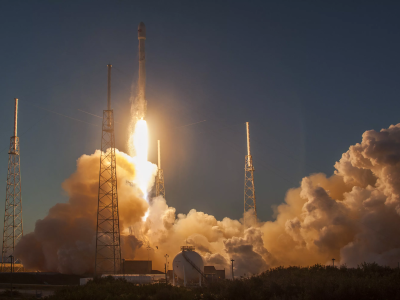

25 июля 2021
ВыборыКак SpaceX Илона Маска создает самую мощную ракету в истории
Американская компания SpaceX в местности Бока-Чика (Техас) завершила установку 29 двигателей Raptor на прототип ракетного ускорителя Super Heavy, который позднее в том же месяце на короткое время был интегрирован с прототипом космического корабля Starship.
25 июля 2021
ВыборыКак SpaceX Илона Маска создает самую мощную ракету в истории
Как SpaceX Илона Маска создает самую мощную ракету в истории
Американская компания SpaceX в местности Бока-Чика (Техас) завершила установку 29 двигателей Raptor на прототип ракетного ускорителя Super Heavy, который позднее в том же месяце на короткое время был интегрирован с прототипом космического корабля Starship.